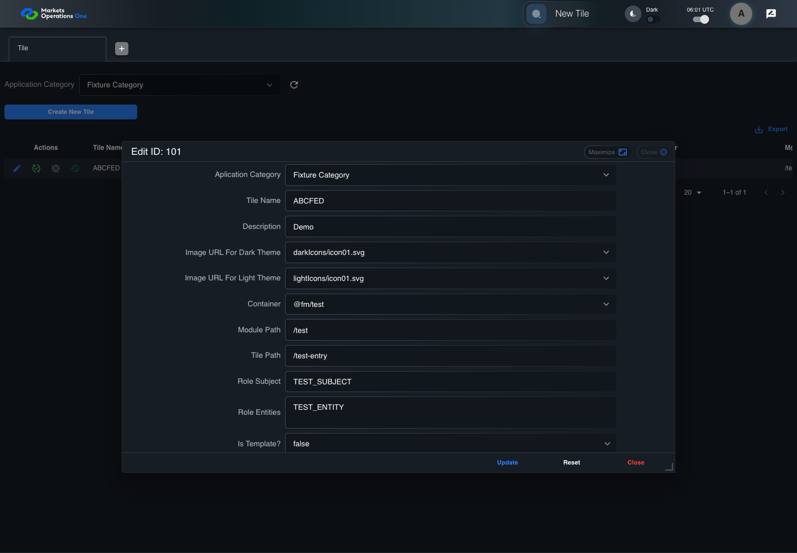

UX-047 administration boundary with step screenshots
FAIL · application/run-050/ux-047-administration-boundary-with-step-screenshots-8ece1377d4a7-attempt-1 · ACTUAL_APPLICATION_LOCAL_SERVICES
Actual React administration screens. Controlled browser credentials, role, records, and BFF responses. Save probes persist the received UI payload without replacing it with expected values. Declared clock emulation controls field timers. Proposed accessibility and source-risk expectations remain separate from business approval.
2026-10-22T06:01:52.080Z to 2026-10-22T06:02:02.415Z
Assertions and result · Artifact manifest · Exact run inputs and source hashes
Result SHA-256:3087c72e060e30ecd5f1052986599de09f1590590512706d916a33a7b4ddb4a2Retained failure details
[
{
"message": "Error: \u001b[2mexpect(\u001b[22m\u001b[31mlocator\u001b[39m\u001b[2m).\u001b[22mtoHaveAccessibleName\u001b[2m(\u001b[22m\u001b[32mexpected\u001b[39m\u001b[2m)\u001b[22m failed\n\nLocator: locator('[role=\"tabpanel\"]:visible').locator('[role=\"dialog\"]').filter({ has: getByText(/^(?:new|edit|verify|deactivate) ID:/) }).getByRole('textbox', { name: 'Description', exact: true, includeHidden: true })\nExpected: \u001b[32m\"Description\"\u001b[39m\nReceived: \u001b[31m\"\"\u001b[39m\nTimeout: 5000ms\n\nCall log:\n\u001b[2m - Expect \"toHaveAccessibleName\" locator('[role=\"tabpanel\"]:visible').locator('[role=\"dialog\"]').filter({ has: getByText(/^(?:new|edit|verify|deactivate) ID:/) }).getByRole('textbox', { name: 'Description', exact: true, includeHidden: true }) with timeout 5000ms\u001b[22m\n\u001b[2m - waiting for locator('[role=\"tabpanel\"]:visible').locator('[role=\"dialog\"]').filter({ has: getByText(/^(?:new|edit|verify|deactivate) ID:/) }).getByRole('textbox', { name: 'Description', exact: true, includeHidden: true })\u001b[22m\n\u001b[2m 14 \u00d7 locator resolved to <input id=\":r3g:\" type=\"text\" value=\"Demo\" aria-invalid=\"false\" placeholder=\"Type here\" class=\"MuiInputBase-input MuiOutlinedInput-input MuiInputBase-inputSizeSmall css-1yzpw69-MuiInputBase-input-MuiOutlinedInput-input\"/>\u001b[22m\n\u001b[2m - unexpected value \"\"\u001b[22m\n",
"stack": "Error: \u001b[2mexpect(\u001b[22m\u001b[31mlocator\u001b[39m\u001b[2m).\u001b[22mtoHaveAccessibleName\u001b[2m(\u001b[22m\u001b[32mexpected\u001b[39m\u001b[2m)\u001b[22m failed\n\nLocator: locator('[role=\"tabpanel\"]:visible').locator('[role=\"dialog\"]').filter({ has: getByText(/^(?:new|edit|verify|deactivate) ID:/) }).getByRole('textbox', { name: 'Description', exact: true, includeHidden: true })\nExpected: \u001b[32m\"Description\"\u001b[39m\nReceived: \u001b[31m\"\"\u001b[39m\nTimeout: 5000ms\n\nCall log:\n\u001b[2m - Expect \"toHaveAccessibleName\" locator('[role=\"tabpanel\"]:visible').locator('[role=\"dialog\"]').filter({ has: getByText(/^(?:new|edit|verify|deactivate) ID:/) }).getByRole('textbox', { name: 'Description', exact: true, includeHidden: true }) with timeout 5000ms\u001b[22m\n\u001b[2m - waiting for locator('[role=\"tabpanel\"]:visible').locator('[role=\"dialog\"]').filter({ has: getByText(/^(?:new|edit|verify|deactivate) ID:/) }).getByRole('textbox', { name: 'Description', exact: true, includeHidden: true })\u001b[22m\n\u001b[2m 14 \u00d7 locator resolved to <input id=\":r3g:\" type=\"text\" value=\"Demo\" aria-invalid=\"false\" placeholder=\"Type here\" class=\"MuiInputBase-input MuiOutlinedInput-input MuiInputBase-inputSizeSmall css-1yzpw69-MuiInputBase-input-MuiOutlinedInput-input\"/>\u001b[22m\n\u001b[2m - unexpected value \"\"\u001b[22m\n\n at /Users/lushevol/code/github/ratan-release-impact/workbench/e2e/audit-specs/admin-ux.spec.ts:71:104\n at AuditCapture.step (/Users/lushevol/code/github/ratan-release-impact/workbench/e2e/support/audit-fixture.ts:94:21)\n at /Users/lushevol/code/github/ratan-release-impact/workbench/e2e/audit-specs/admin-ux.spec.ts:39:31",
"location": {
"file": "/Users/lushevol/code/github/ratan-release-impact/workbench/e2e/audit-specs/admin-ux.spec.ts",
"column": 104,
"line": 71
},
"snippet": " 69 | }\n 70 | if ((match = /textbox labelled \"([^\"]+)\".* accessible name (?:equal to|retains accessible name) \"([^\"]+)\"/.exec(text))) { await expect(field(match[1])).toHaveAccessibleName(match[2]); return; }\n> 71 | if (text.includes('retains accessible name \"Description\"')) { await expect(field('Description')).toHaveAccessibleName('Description'); return; }\n | ^\n 72 | if (text.includes('For each disabled input')) {\n 73 | expect(disabledCount).toBeGreaterThan(0);\n 74 | const snapshot = await app.dialog().ariaSnapshot(); await audit.record('verification-accessibility-tree', snapshot);"
}
]Screenshot capture: CAPTURED. Named frames: 5.
Step screenshot bindings: INCOMPLETE. 4/6 canonical steps have execution screenshots.
Bindings measure structural coverage only. They do not establish screenshot content quality or relevance.
Screenshot content review: NOT_REVIEWED. Recorded context: 0/5 frames. Identical image bytes: 2 repeated frames. Recorded context does not establish human visual review.
Step 5 has no screenshot from an executed step. Step 6 has no screenshot from an executed step.
Canonical step timeline
Given ADMIN-A has T1 with title sequence "ABC" then U+202E then "DEF"
Execution: PASSED.1. step-01 Visible state after step 1: Given ADMIN-A has T1 with title sequence "ABC" then U+202E then "DEF"
2026-10-22T06:01:55.595Z · 1440×1000
Step: /Users/lushevol/code/github/ratan-release-impact/workbench/tasks/ui-test-coverage-20261022/test-cases.md:13753
SHA-256:0450df8d7879c8d2a073923dc2983dda55967304882e79296faea2e21e82b199When ADMIN-A clicks the button labelled "Edit" in the Tile grid row with "Record Id" equal to "101" on the administration page
Execution: PASSED.
2. step-02 Visible state after step 2: When ADMIN-A clicks the button labelled "Edit" in the Tile grid row with "Record Id" equal to "101" on the administration page
2026-10-22T06:01:56.073Z · 1440×1000
Step: /Users/lushevol/code/github/ratan-release-impact/workbench/tasks/ui-test-coverage-20261022/test-cases.md:13754
SHA-256:b75f2c77795d3940a30eb98442f529fdd9a1b543f92b845d453c04b963814f3aThen The textbox labelled "Tile Name" in the dialog with title text "edit ID: 101" on the administration page has value equal to the exact fixture Unicode sequence
Execution: PASSED.3. step-03 Visible state after step 3: Then The textbox labelled "Tile Name" in the dialog with title text "edit ID: 101" on the administration page has value equal to the exact fixture Unicode sequence
2026-10-22T06:01:56.270Z · 1440×1000
Step: /Users/lushevol/code/github/ratan-release-impact/workbench/tasks/ui-test-coverage-20261022/test-cases.md:13755
SHA-256:6de8172d932de3754d53f14b103d46de6acb07cabfa671def7f0771b4dd8b789And The textbox labelled "Description" in the dialog with title text "edit ID: 101" on the administration page retains accessible name "Description"
Execution: FAILED.
4. step-04-failure Visible state when step 4 failed. Later steps did not execute.
2026-10-22T06:02:01.448Z · 1440×1000
Step: /Users/lushevol/code/github/ratan-release-impact/workbench/tasks/ui-test-coverage-20261022/test-cases.md:13756
SHA-256:b75f2c77795d3940a30eb98442f529fdd9a1b543f92b845d453c04b963814f3aImage bytes match frame 2. An unchanged image can be valid for consecutive assertions. This match does not establish correct step content.
And The button labelled "Update" in the dialog with title text "edit ID: 101" on the administration page retains visible label "Update"
Execution: NOT_EXECUTED.No screenshot is recorded for this step. No executed state is claimed.
And The visual reading order of adjacent field labels and action controls equals the baseline without the bidi title
Execution: NOT_EXECUTED.No screenshot is recorded for this step. No executed state is claimed.
Additional named frames

The visible state when the test failed.
2026-10-22T06:02:01.619Z · 1440×1000Step: Test source: /Users/lushevol/code/github/ratan-release-impact/workbench/e2e/audit-specs/admin-ux.spec.ts:12
SHA-256:
6de8172d932de3754d53f14b103d46de6acb07cabfa671def7f0771b4dd8b789Image bytes match frame 3. An unchanged image can be valid for consecutive assertions. This match does not establish correct step content.
Screenshots establish visible state only. Assertions and traces support functional claims.